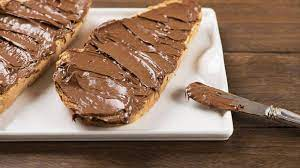

Bocata de nocilla
2º Receta de mayor calidad
Otros ingredientes posibles
| Avellanas |
| Nutella |
| Plátano |
Dato curioso! Esta receta ha sido confirmada como la segunda mejor por Chicote
Hola, amantes de la Nocilla
Bocata

Bocata Nocilla tutorial
Untar Nocilla en una rebanada de pan y poner otra encima
Elaborar con la mayor precisión posible
Bocata grande
Otras recetas
Avanza por otras páginas para ver las recetas: